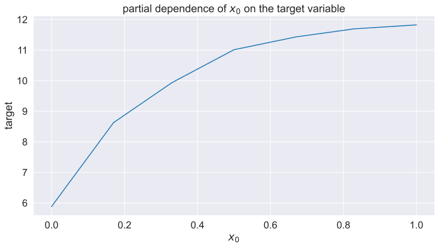
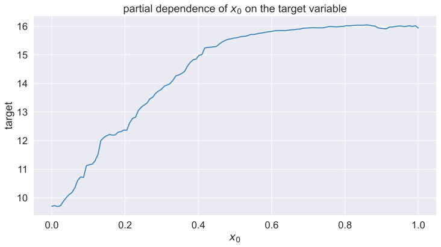

This article provides an overview of Partial Dependence Plots (PDPs) and Individual Conditional Expectation (ICE) plots, powerful tools for visualizing the relationships between features and predictions in machine learning models. We’ll explore how these plots can help to interpret model behavior, revealing both average effects and individual data point responses.
Code
import matplotlib.pyplot as pltimport numpy as npimport pandas as pdimport seaborn as snsfrom matplotlib_inline.backend_inline import set_matplotlib_formatsfrom sklearn.datasets import make_friedman1from sklearn.ensemble import RandomForestRegressorfrom sklearn.inspection import PartialDependenceDisplay, partial_dependence
# setting global plotting settings# roudning all floats to two digitspd.options.display.float_format ="{:.2f}".formatset_matplotlib_formats("svg")sns.set_context(context="notebook", font_scale=1.5)sns.set_palette("tab10")sns.set_style("darkgrid")FIGSIZE = (12, 6)RANDOM_STATE =35
1 Introduction
Let’s dive into the world of partial dependence plots (PDPs), powerful visual tools that reveal the average impact a specific feature has on the predictions made by a model.
2 Why Explore Partial Dependence Plots?
Visualizing how different features influence model predictions can be crucial for understanding, interpreting, and trusting the decisions made by machine learning models. PDPs help us gain insights into the relationship between the features and the predicted outcomes.
To illustrate the concept of PDPs, we will use a synthetic dataset from Scikit-learn, available here.
The synthetic dataset is created based on the following formula: \(y(X) = 10\sin(\pi \cdot X_0 \cdot X_1) + 20 \cdot (X_2 - 0.5)^2 + 10 \cdot X_3 + 5 \cdot X_4 + \text{noise} \cdot N(0, 1)\).
For our demonstration, I will generate a dataset with 7 features. However, it’s important to note that only 5 of these features actually affect the output—this means the other two features do not have any predictive power. The dataset will contain 2000 samples and include a noise level set to 2.
The dataset’s input features are uniformly distributed, \(U(0,1)\), which typically means their average value hovers around 0.5. In contrast, our target feature stands out with a much higher average value of approximately 14.
For our analysis, we’ll be using a random forest model. It’s my go-to favorite for several reasons: no need for feature scaling, robustness to missing values, and its proficiency in capturing non-linear relationships. Plus, it has the added advantage of relatively quick fitting times.
Before examining the partial dependence of each feature on the target, let’s first handle some data preparation. A practical approach is to begin with a small random sample of our data. After working through an end-to-end example using this subset, we can consider applying the same method to the larger dataset.
3 Step-by-Step Guide to Calculating a Partial Dependence Plot (PDP)
To determine the partial dependence (PD) of a feature, such as x_0, on the predicted outcome, we follow a structured process:
Identify the Range of the Feature: Ascertain the range within which the feature x_0 varies. For most datasets, this would be the minimum and maximum values that x_0 can take.
Determine the Grid Size: Decide on a grid size, which essentially is the number of points or the sampling resolution across the feature’s range.
Expand the Dataset Using the Grid: Implement the grid across the dataset. This step significantly increases the size of the dataset because for each original data point, we now have multiple points covering the entire grid.
Generate Predictions: Use the model to predict outcomes on this augmented dataset. These predictions are solely for inference, which generally has a lower computational cost.
Compute the Average: Take the mean of the predictions corresponding to each value on the grid. This average is what gives us the partial dependence value at each point.
Through this method, we can illustrate how changes in x_0 influence the model’s predictions, regardless of the values of other features. This visual representation helps in understanding the behavior and decision-making process of complex models.
3.1 Identify the Range of the Feature
Code
df_reg["x_0"].agg(["min", "max"])
min 0.00
max 1.00
Name: x_0, dtype: float64
When calculating the partial dependence of x_0, which ranges from zero to one, you have the option to consider the entire range of values x_0 can take or focus on a specific region, such as the 90th percentile. The latter approach eliminates potential outliers that may skew the PD calculation.
3.2 Determine the Grid Size
For this particular analysis, we’re opting for a modest grid size of 7. This means we’ll create a sequence of 7 points that are evenly spaced across the feature x_0 range of 0 to 1.
3.3 Expand the Dataset Using the Grid
Using the np.linspace() function in Python, we can easily generate our grid. This function creates an array of evenly spaced values over a specified interval. Once we have our grid, we can augment our dataset through a cross join operation. For those familiar with SQL, it’s common knowledge that cross joins can rapidly increase the size of your data. With 3 original data points and a grid size of 7, we increase our data count to ($ 3 = 21$ ). In this expanded dataset, the new column x_0_sample represents the values for x_0 across which we want to compute the partial dependence.
With our expanded dataset, now consisting of 21 observations, we move forward by utilizing our model to generate predictions for each observation. In essence, we ask the original model to provide predictions for every new data point that we’ve added.
After obtaining predictions, we aggregate results by selecting x_0_sample and y_pred, grouping by x_0_sample, and applying a mean aggregation function to reveal the average impact of changes in x_0 on model predictions.
The dataframe shows the average impact of feature x_0 on the target variable, with an observable increase in the target variable as x_0 values rise, as depicted below.
Code
_, ax = plt.subplots(1, 1, figsize=FIGSIZE)ax.plot(df_pdp_plot["x_0_sample"], df_pdp_plot["y_pred"])ax.set_xlabel("$x_0$")ax.set_ylabel("target")ax.set_title("partial dependence of $x_0$ on the target variable")plt.show()

4 Interpreting the Partial Dependence Plot
The plot shows that the model responds positively to increases in x_0. However, this analysis is based on only three observations. To gain a more precise understanding of the relationship between x_0 and the target variable, consider utilizing the full dataset of 2000 samples along with a finer grid of 128 points. This expansion results in \(2000 * 128 = 256,000\) data points, illustrating the significant data growth when examining partial dependence for just one feature.
By using more data and a refined grid, we can generate a more accurate representation of the x_0 variable’s relationship with the target variable.
5 Implementation in Code
Below is the code snippet that will generate this comprehensive dataset. Note the comments indicating where alterations are made to accommodate the full dataset and the finer grid size.
Code
df_pdp = df_reg.drop(columns="x_0") # <- the full datasetdf_sample_grid = pd.Series( np.linspace(0, 1, 128), # <- sampling is 128 name="x_0_sample",)df_pdp = df_pdp.join(other=df_sample_grid, how="cross")df_pdp = df_pdp.assign( y_pred=reg.predict( df_pdp.loc[ :, ["x_0_sample", "x_1", "x_2", "x_3", "x_4", "x_5", "x_6"] ].to_numpy() ))df_pdp_plot_full = ( df_pdp[["x_0_sample", "y_pred"]].groupby("x_0_sample", as_index=False).mean())_, ax = plt.subplots(1, 1, figsize=FIGSIZE)ax.plot(df_pdp_plot_full["x_0_sample"], df_pdp_plot_full["y_pred"])ax.set_xlabel("$x_0$")ax.set_ylabel("target")ax.set_title("partial dependence of $x_0$ on the target variable")plt.show()

After utilizing the full dataset of 256,000 samples and applying a more refined grid of 127 points, the resulting plot confirms our earlier findings that as the value of x_0 increases, so does the target variable, and this relationship appears to be almost monotonic.
With the increased data resolution, we now have a more granular view confirming and clarifying the positive correlation between x_0 and the target variable. This level of detail is invaluable for model interpretation and can guide decisions on feature importance and model adjustments. It underscores the capability of partial dependence plots to provide deeper insights into the model’s behavior and help pinpoint how specific features drive the predictions.
5.1 Utilizing Existing Libraries for Partial Dependence Plots
When it comes to practical applications in data science, it’s often more efficient to leverage existing tools and libraries rather than creating custom code from scratch. This is particularly true for partial dependence plots (PDPs), where coding our own routine can be complex and time-consuming.
Scikit-learn, a widely-used library in the machine learning community, offers a convenient and robust implementation of partial dependence with its partial_dependence function. This can save a substantial amount of effort and helps ensure that our calculations are accurate and aligned with best practices.
Additionally, for those who are already utilizing the SHAP library to compute Shapley values—which provide insight into the contribution of each feature to the prediction—there’s good news. SHAP also includes functionality for generating partial dependence plots with its shap.plots.partial_dependence feature. This is extremely beneficial as it integrates seamlessly with other SHAP-based interpretability techniques, offering a consistent and comprehensive suite of tools for model explanation.
These existing implementations not only streamline the process but also ensure that you’re taking advantage of the latest methodologies and optimizations in the field. Whether you’re conducting exploratory data analysis or presenting findings to stakeholders, these tools can greatly enhance the efficiency and clarity of your model interpretation efforts.
5.2 one-way partial dependence
The beauty of using scikit-learn’s built-in functions lies in their simplicity and power. Generating partial dependence plots for your entire dataset can indeed be as straightforward as a single line of code. Scikit-learn takes care of the heavy lifting involved in computing the partial dependence and plotting it. This function will automatically handle the grid creation, predictions, and averaging needed to generate the PDP. The resulting plot is a powerful visual tool that can instantly convey how changes in the specified feature(s) affect the model’s output, facilitating a better understanding of the model’s behavior.
This ease of use, combined with the robustness of scikit-learn, makes it a go-to choice for practitioners looking to interpret their machine learning models without getting bogged down in the details of implementation. 😊
5.3 Insights from the Partial Dependence Plot Analysis
The partial dependence plots provide a wealth of insights into how different features impact the model’s predictions. Based on the plot, we can make several observations:
Features x_6 and x_5: These features appear to have no meaningful impact on the model’s output. Variations in x_6 or x_5 do not significantly alter the predicted target value. This aligns with our earlier understanding that these features represent random noise, thus confirming their lack of predictive power.
Feature x_2: The partial dependence plot for x_2 resembles the shape of a bathtub, indicating that the extremes of its value range lead to higher predictions for the target variable, while a mean value of 0.5 correlates with the lowest target outcome. This suggests a non-linear relationship where both low and high values of x_2 increase the target value, with a trough in the middle.
Features x_0 and x_1: These features exhibit a steady monotonic increase in their impact on the target variable, which begins to plateau at higher input values. This plateau suggests that beyond a certain point, further increases in x_0 or x_1 have a diminished effect on the prediction.
Remaining Features x_3 and x_4: The plots for x_3 and x_4 indicate that higher values of these features generally lead to higher predicted outcomes for the target variable. Notably, there’s a significant jump in the target prediction at around 0.4 for x_3 and 0.6 for x_4, highlighting specific values where there might be a threshold effect or a strong non-linear influence.
These insights from the partial dependence plots can guide further data analysis and model refinement. By understanding how each feature affects the target, we can prioritize features for engineering, adjust the model to better capture non-linear relationships, and potentially simplify the model by removing non-contributory noise features.
5.4 Exploring Feature Interactions with Two-Way Partial Dependence Plots
Partial dependence plots aren’t limited to individual features; they can also be extended to explore the interactions between two features and their joint effect on the target variable. This two-dimensional analysis, known as a two-way partial dependence plot, provides a deeper understanding of how feature pairs contribute to the model’s predictions. Here’s how you would approach creating a two-way PDP:
Select Two Features: Choose the two features you want to analyze for interaction.
Create a Sample Grid: Construct a grid that is the Cartesian product of the individual grids for the two selected features. This means if you have 7 points for x_0 and 7 for x_1, your sample grid will have 49 points representing all combinations of x_0 and x_1.
Expand the Dataset: Just as with the one-way PDP, you now apply this grid to the dataset. Each original datapoint is replaced by the set of new points from the grid, dramatically increasing the dataset size.
Generate Predictions: Use the model to predict the target variable for this comprehensive grid, taking into account every combination of the two features.
Compute the Average: By averaging the predictions across the grid for each combination, you can visualize the effect of varying both features simultaneously.
The result is a contour plot or a three-dimensional surface plot that shows how changes in the two features together impact the predicted outcome. This gives insight into whether the features act independently on the target or if there are interaction effects—situations where the influence of one feature on the target depends on the value of the other feature.
Two-way partial dependence plots can help identify synergies or redundancies between features, informing decisions about feature engineering or model selection to better capture complex relationships within the data.
Individual Conditional Expectation (ICE) plots diverge from the average effect shown in PDPs by tracing the response of each individual observation to changes in a feature. Here’s the distilled essence of ICE plots:
6.1 Focused on the Individual
Each line in an ICE plot represents the prediction path for a single observation as the feature of interest varies. This allows us to inspect how specific instances react to feature changes individually, rather than in aggregate.
6.2 Visual Diagnosis of Variability
ICE plots can reveal if different observations respond inconsistently to a feature change, showing increases for some and decreases for others. This can pinpoint performance issues not visible in PDPs.
6.3 Enhanced Model Understanding
By identifying how subsets of data are influenced by feature changes, ICE plots offer detailed insights into model behavior, helping to refine predictions and address potential issues at the individual level.